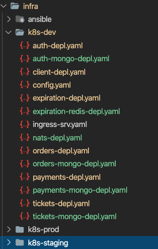

Created by Peter Gross, last modified on Sep 14, 2020
Directories
Since some of the people that may read this blog will not be experts in Kubernetes, I have decided to split them out into three directories
1) Dev
These kubernetes files are as simple as possible and create as few resources as possible, so people running minikube or docker for desktop have a chance of running them on their machines.
I still use configmaps and secrets for managing environment variables, since this good practice should be applied from the start.
They also have been changed to use dockerhub as the container repository, again to keep it as simple as possible.
2) Staging
These are the files I use on my local kubernetes cluster, they include:
Node affinity to keep the databases close to their services;
Initialisation checks that the databases are up before bring the service up
Storage volumes to persist the data, the dev only stores in the container and will be lost when deleting the containers
Use of a private container repository on GitLab
3) Production
Until I formally choose a permanent platform for anything I produce, this will actually be a play area for deploying to various cloud providers, so this blog will not cover any of the things you may see in this directory
These files have been placed in the infra directory

Skaffold
The skaffold config file has been configured to use the k8s-dev directory and pull its images from my dockerhub account
The github deployment of the manifests workflow however is looking for changes to the production files, for example here is the version iused to push to DigitalOcean
{kind=link}